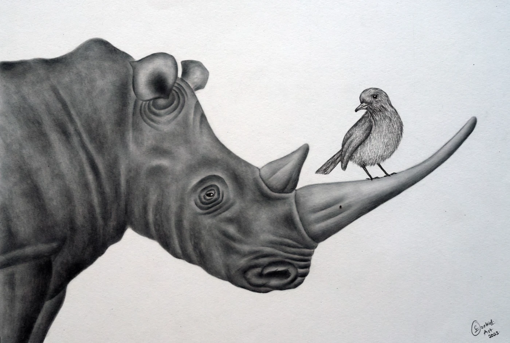
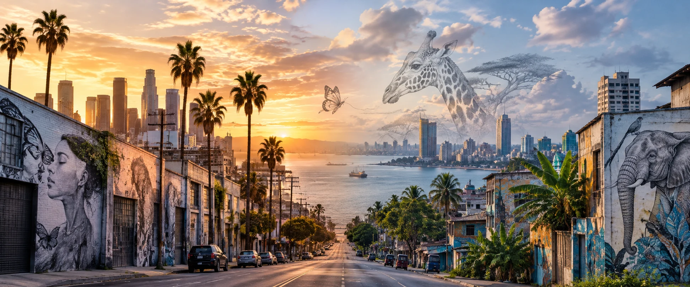
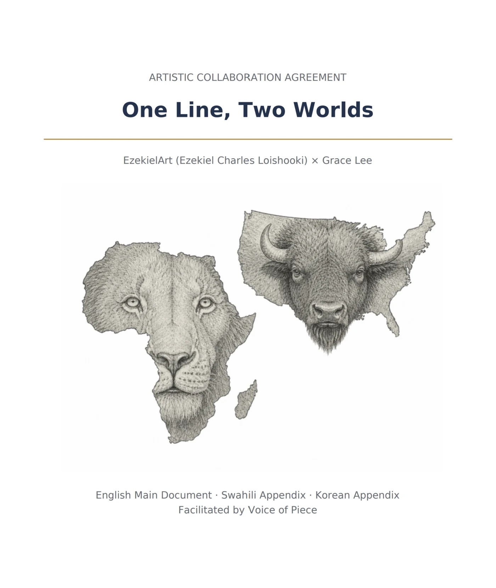
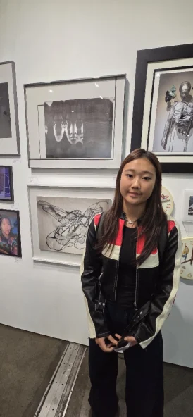
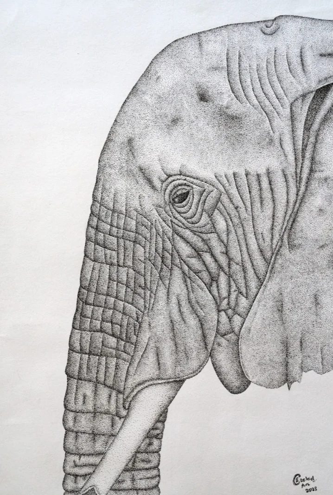
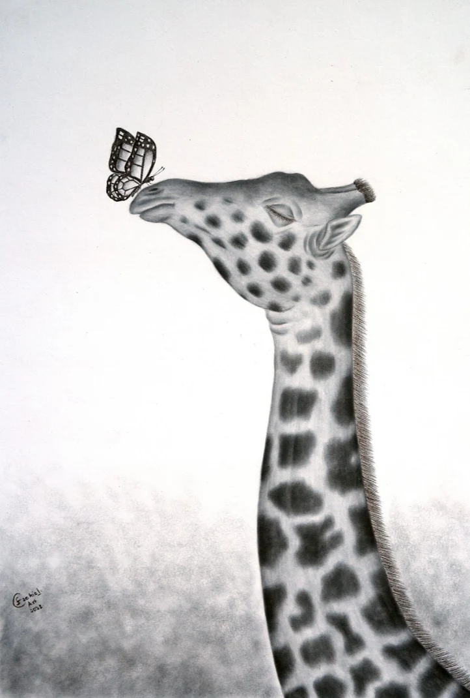
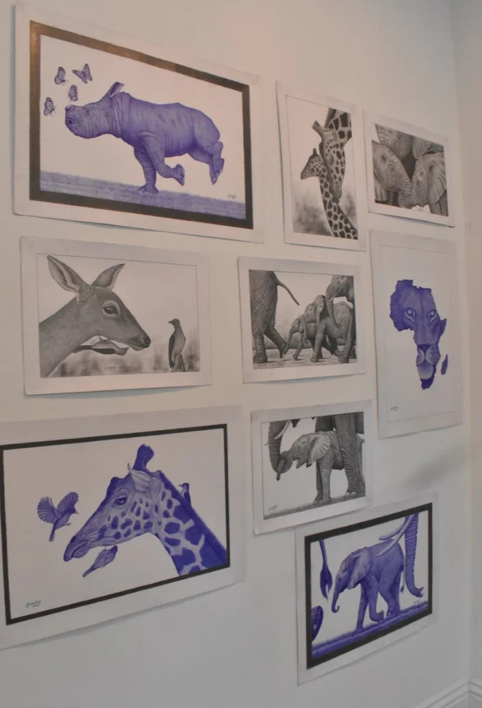

Find a creative connection
Explore shared themes and complementary skills. See why a connection could work. You always choose.
LOS ANGELES ↔ TANZANIA
Different places. Different perspectives. A shared place to make something neither of you could make alone.

A different perspective changes everything.
34.0522° N ↔ 6.7924° SA REAL COLLABORATION
01 — THE BEGINNING

Grace Lee × Ezekiel Charles Loishooki
LOS ANGELES, USA ↔ TANZANIA
Two artists bring their own visual worlds into a shared composition. The collaboration explores how distinct works can meet while preserving the meaning each artist brings.
The project brings together artwork, a T-shirt, and a video—and makes the conversation about credit, permission, and shared decisions part of the creative process.
FROM A HELLO TO SOMETHING NEW
02 — YOUR NEXT CHAPTERYou bring the practice and the perspective. We make the space for a conversation, a clear agreement, and a shared work.
Explore shared themes and complementary skills. See why a connection could work. You always choose.
Write in Korean, English, or Kiswahili. Keep the original, review translations, and stay part of the same conversation.
Build a shared brief and draft the details: credit, permissions, revenue, and what each artist will contribute.
THE WORK AT THE HEART OF IT



THERE IS ROOM FOR YOUR PERSPECTIVE
ARTIST CONNECTIONS
A shared interest can start a conversation. A different way of working can take it somewhere new.
YOUR CREATIVE SPACE
Gather your ideas, build a shared brief, and keep the details in one place.